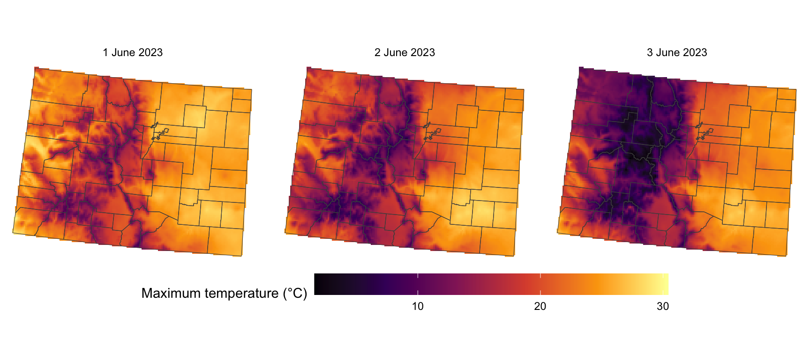

Ex-9-2: Raster Data, with an AI Assistant
Abstract
Spatial Data
This is an in-class exercise. Before class, work through the lecture 09-2: Raster Data. In class, you work through the worksheet with an AI assistant writing the code. Your job is everything the AI cannot do: finding out what the cell values mean, asking for the right thing and the right checks, and judging whether the result is right.
Setup
- Download the worksheet, ex-9-2.qmd, and the data files 9-2-tmax-colorado.tif, 9-2-co-counties.gpkg and 9-2-README.txt.
- Use the
ch9-practiceR Project from exercise 9-1, or make one: a folder with two subfolders,dataandanalysis. You may ask the AI how to do this. - Copy the three data files into
ch9-practice/data, and the worksheet intoch9-practice/analysis. - Ask the AI to install the
terra,tidyterraandsfpackages if you have not already. - Open the worksheet and start at Task 1.
It worked if
Typing here::here() in the Console prints the path to ch9-practice and nothing longer.
If here::here() prints a path ending in analysis, the .Rproj file was not recognised. here only accepts a .Rproj file whose first line starts with Version:, which every project created in RStudio (File, New Project) has.
Answers
Open each one only after you have tried the task.
Task 1: Look and predict
What you should find
A. Daily maximum air temperature, three layers: 1, 2 and 3 June 2023.
B. Tenths of a degree Celsius, stored as whole numbers: 215 means 21.5 °C.
C. -9999, in the cells outside Colorado.
D. NAD83 / Conus Albers, EPSG 5070, in metres. The extent will be in metres, not degrees, so it cannot be compared with longitudes and latitudes directly.
E. Early June daytime highs in Colorado run from cold on the high mountains to hot on the eastern plains. Something like 0 to 35 °C is a believable range; stored in tenths, that is 0 to 350. A prediction in that region is fine; the point is to have one before you look.
Task 2: Look at the raster
What you should find
128 rows, 162 columns, 3 layers named tmax_2023_06_01, tmax_2023_06_02, tmax_2023_06_03. Cells are 4,000 by 4,000 metres. The extent runs from -1,148,294 to -500,294 in x and 1,564,785 to 2,076,785 in y, metres in EPSG 5070.
The values run from -9999 to 304 on the first day, and no cell is missing (0 missing cells). Against the README, both are expected: -9999 has not been declared as no data yet, and the values are still in tenths. Which is why this task only looks: any average computed now would be wrong.
Task 3: Declare the no-data value and convert
What you should find
After marking -9999 as missing and dividing by 10:
| Day | Smallest (°C) | Largest (°C) | Average (°C) |
|---|---|---|---|
| 1 June | 8.4 | 30.4 | 21.9 |
| 2 June | 5.5 | 28.7 | 19.3 |
| 3 June | 1.6 | 27.8 | 17.1 |
3,645 of 20,736 cells are missing in every layer, about 18%: the Albers rectangle around Colorado is larger than the state, and is tilted against its borders. The extent, transformed to longitude and latitude, runs from -109.8 to -101.7 and 36.4 to 41.6, around Colorado.
The order matters. Declare -9999 as missing first, then divide. Divide first and the code must look for -999.9 instead, and an AI that does not notice will declare nothing.
Task 4: A map with the counties
What you should find
The raster is in EPSG 5070 and the counties in EPSG 4269, so the CRS check says they differ.
For a map that does not matter: ggplot2 draws every layer in the CRS of the first one, transforming the others as it draws, so the county lines sit on the raster’s state outline. For any calculation that combines the two, such as the average temperature in each county (lecture 09-6), they must share a CRS first. Transform the counties to the raster’s CRS, not the other way round: projecting the raster recomputes every cell value.
A map like the one below is what to expect:
On the map, the cold cells follow the Rocky Mountains through the middle and west of the state, and the eastern plains are warm on all three days. Without the no-data declaration, the -9999 cells would set the bottom of the colour scale and every real temperature would be drawn in nearly the same colour.
Task 5: A check from knowing the place
What you should find
The mountains are in the west of Colorado and the plains in the east, and temperature falls with height, so the western half should be cooler.
| Day | West half (°C) | East half (°C) |
|---|---|---|
| 1 June | 19.4 | 24.3 |
| 2 June | 15.5 | 22.9 |
| 3 June | 11.7 | 22.2 |
The check passes on all three days. Had the grid been stored mirrored, with east and west swapped, this check would have failed while every number check passed.
Task 6: Maria’s code
Answers
A. Line 1 reads the raster and divides every value by 10. Line 2 averages each layer, skipping missing cells.
B. The path. C:/Users/maria/Downloads exists only on Maria’s computer.
C. -9999 was never declared as no data. After line 1 it is -999.9, a number, so na.rm = TRUE does not skip it. The averages come out at -157.7, -159.9, -161.7 °C.
D. The smallest value (-999.9 °C is impossible) and the number of missing cells (0, where the cells outside Colorado should be missing). An average below -100 °C is also impossible on its face, but only if you look at it with a believable range in mind.
E. The AI cannot see the README, so it can only find this problem if it asks what the values mean or guesses -9999 from experience. Compare its list with yours.